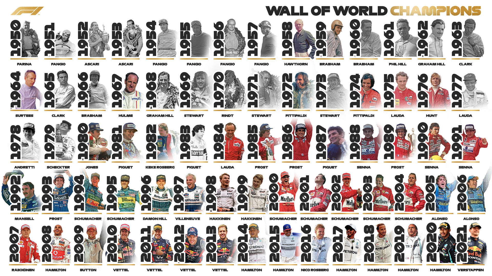
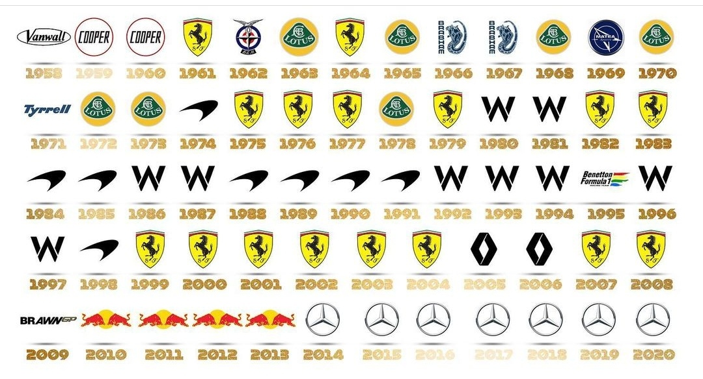
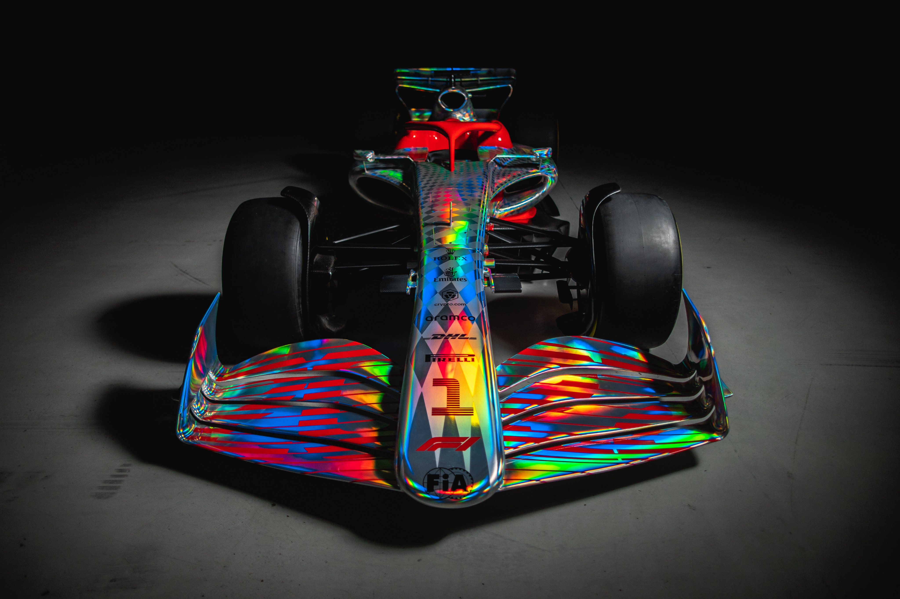
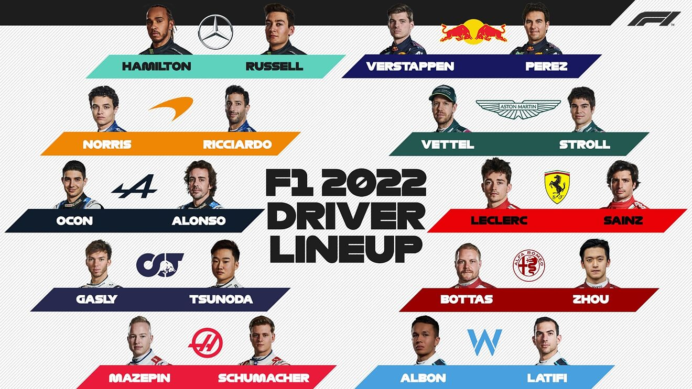

El Campeonato Mundial de Fórmula 1 de la FIA, más conocida como Fórmula 1, F1 o Fórmula Uno, es la principal
competición de automovilismo internacional y campeonato de deportes de motor más popular y prestigioso del mundo.
La entidad que la dirige es la Federación Internacional del Automóvil (FIA). En septiembre del 2016, la empresa
estadounidense Liberty Media, a través de la adquisición del Formula One Group, es responsable actualmente de
gestionar y operar el campeonato.
A cada carrera se le denomina Gran Premio y el torneo que las agrupa se denomina Campeonato Mundial de Fórmula 1. La
mayoría de los circuitos de carreras donde se celebran los Grandes Premios son autódromos, aunque también se utilizan
circuitos callejeros y anteriormente se utilizaron circuitos ruteros. A su vez, los automóviles utilizados son
monoplazas con la última tecnología disponible, siempre limitadas por un reglamento técnico; algunas mejoras que
fueron desarrolladas en la Fórmula 1 terminaron siendo utilizadas en automóviles comerciales, como el freno de disco.
El inicio de la Fórmula 1 moderna se remonta al año 1950, en el que participaron escuderías como Ferrari, Alfa Romeo
y Maserati. Algunas fueron reemplazadas por otras nuevas como McLaren, Williams, Red Bull y otras que volvieron como
Mercedes que se han alzado varias veces con el Campeonato Mundial de Constructores. Por su parte, los pilotos deben
contar con la superlicencia de la FIA para competir, que se obtiene por los resultados en otros campeonatos.
En la F1 se celebran dos competiciones o mundiales a la vez: El Campeonato Mundial de Constructores y el Campeonato
Mundial de Pilotos.
Con la entrada de Liberty Media a la Formula 1, se fue introduciendo nuevos cambios, uno de ellos fue un himno. El himno de la Formula 1 se estrenó por primera vez en la temporada 2018 y su autor es Brian Tyler.
LINK INTRO F1 2021
Aquí os dejo el himno intepretado en orquesta:
Y aquí os dejo un link a Youtube para ver la intro que se ha usado en la temporada 2021 ya que lo no he podido poner por temas de copyright:
El sistema de puntiación de la F1 consiste en que en los 10 primeros pilotos al finalizar la carrera del Gran Premio obtiene puntos de la siguiente manera:
Este sitema de puntiación ha variado a lo largo de la historia de la competición, el actual lleva implantado desde la
temporada 2010. Un ejemplo de la variación de puntuaje en la F1 es que en 1950 solo puntuaban los 5 primeros donde el
primero se llevaba 8 puntos.
También, en el reglamento se dice que si una carrera ha empezado, pero no se ha realizad más del 80% de la carrera se
dará la mitad de los puntos de cada posición correspondientemente. Además, si la carrera no se ha terminado, pero ha
superado el 80% de su duración se dará la totlaidad de los puntos, como si hubiera acabado normal.
La estructura de un Gran Premio se divide en 5 partes, distribuido en un fin de semana (viernes, sábado y domingo):
-Viernes:
-----Libres 1: Los equipos y los pilotos prueban diferentes configuraciones para poner el coche al 100% de cara a la
clasificación y carrera. Su duración es de 1 hora.
-----Libres 2: Los equipos y los pilotos prueban diferentes configuraciones para poner el coche al 100% de cara a la
clasificación y carrera. Su duración es de 1 hora.
-Sábado:
-----Libres 3: Los equipos y los pilotos prueban diferentes configuraciones para poner el coche al 100% de cara a la
clasificación y carrera. Su duración es de 1 hora.
-----Clasificación: Se determina la clasificación para la salida de la carrera del domingo, siendo el más rápido el
1º y el más lento el 20º. Su duración es de 1 hora. Se divide en 3 partes:
--------Q1: Se clasifican a Q2 los 15 pilotos más rápidos, por lo tanto se eliminan los 5 últimos y estos como hayan
quedado saldrán así en la carrera. Su duración es de 20 minutos.
---------Q2: Se clasifican a Q3 los 10 pilotos más rápidos, por lo tanto se eliminan los 5 últimos y estos como hayan
quedado saldrán así en la carrera. Su duración es de 20 minutos.
---------Q3: Se determina la posición de las 10 primeras posiciones de la salida del domingo. Al que queda 1º se le
denomina "poleman". Su duración es de 20 minutos.
-Domingo:
-----Carrera: Se realiza la carrera. Las vueltas que dan al circuito dependerá de la longitud del circuto en el que
corran. La duración de la carrera suele durar aproximadamente 2 horas.
El Campeonato Mundial de Pilotos es otorgado por la FIA al piloto de Fórmula 1 más exitoso de la temporada,
determinado por el sistema de puntuación en relación con los resultados de los Grandes Premios. El primer Campeonato
Mundial de Pilotos fue otorgado en la temporada 1950 a Giuseppe Farina. El primer piloto en ganar más de un
campeonato fue Alberto Ascari en 1952 y 1953.
La FIA declara oficialmente al campeón al final de la temporada, pero se dice que un piloto "aseguró" el campeonato
cuando ningún otro tiene posibilidad de acumular más puntos que él, incluso si puntuara el máximo en todas las
carreras restantes de la temporada. El piloto que ha asegurado el campeonato con mayor anticipación ha sido Michael
Schumacher en la temporada 2002, cuando aún restaban seis carreras por disputar.
Treinta y cuatro pilotos distintos han ganado el campeonato, con Michael Schumacher ostentando las plusmarcas de
siete títulos en total y cinco títulos consecutivos en las temporadas entre 2000 a la de 2004.
Aquí teneis una tabla con todos los campeones mundiales a lo largo de la historia de la F1:

El Campeonato Mundial de Constructores, llamado en sus inicios Copa Internacional de Fabricantes de F1, es otorgado
por la FIA al constructor de Fórmula 1 más exitoso de la temporada, determinado por el sistema de puntuación de
acuerdo con los resultados de los Grandes Premios. El primer Campeonato Mundial de Constructores fue otorgado en la
temporada 1958 a Vanwall.
Para propósitos del campeonato, distintas combinaciones de chasis-motor se consideran distinto constructor. Los
puntos para el campeonato de constructores se calculan sumando los puntos obtenidos en cada carrera por cualquier
piloto de un constructor. Hasta 1979, solamente el piloto que obtenía más puntos en cada carrera para cada
constructor contribuía para el campeonato.
Solamente en once ocasiones el equipo Campeón Mundial de Constructores no ha conseguido también el del Campeonato
Mundial de Pilotos en la misma temporada.
En las 63 temporadas que se ha otorgado el campeonato, solamente 15 distintos constructores lo han ganado, siendo
Ferrari la más exitosa, con 16 títulos, incluyendo 6 consecutivos de 1999 a 2004.

La próxima temporada va a ser la más especial en los últimos años, ya que se cambia el reglamento a la hora de construir los monoplazas con la finalidad de quitar el aire sucio que provocaban y facilitar los adelantamientos con el efecto suelo que quieren implentar. Los coches serán parecidos al siguiente modelo que presentó la FIA:

Estos van a ser los pilotos que correrán en la temporada 2022 en la Formula 1:
